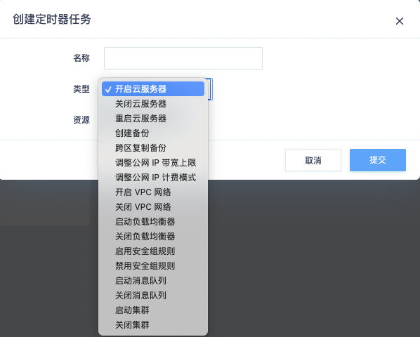

定时器
创建定时器
创建定时器时，要指定为『仅执行一次』还是『重复执行』，其中重复执行还分为 『每天』、『每周』、『每月』三种，并且可以详细指定每周几或每月几号执行。
例如每周一、周四、周六执行，可如下图设置：
例如每月的10日、20日、月末执行，可如下图设置：
如果设置为『每月』执行，在选择日期时除了数字的日期外，还有一个『月末』 选项，选择它则表示会在每月的最后一天执行，无论那天是几号。假如既选择了『28』号和『月末』， 且当年的2月也是28天，在这一天也只会执行一次。
添加定时任务
定时器目前支持的定时任务有：
- 开启云服务器
- 关闭云服务器
- 重启云服务器
- 创建备份
- 跨区复制备份
- 调整公网 IP 带宽上限（每天每个公网 IP 带宽调整次数最多 100 次）
- 调整公网 IP计费模式
- 开启VPC网络
- 关闭VPC网络
- 启动负载均衡器
- 关闭负载均衡器
- 启用防火墙规则
- 禁用防火墙规则
每种任务都可支持最多5个资源批量操作，还可通过多个任务将资源分组执行。每个定时器可创建5个任务，任务类型可以重复，每个任务都支持对资源的批量操作。

当到达设定好的执行时间时，多个任务会同时开始执行。每个任务在执行后都会保留执行结果到历史记录中。
任务在创建后，状态是『已启用』，你可以随时『禁用』某些任务，这样在到达设定的执行时间时， 会忽略这些『禁用』状态的任务。
下面是一张创建完任务的页面：
立即执行任务
默认情况下，任务都是在到达设定的时间才会被触发。 为了更便于用户使用，我们提供了立即执行功能，可以随时触发已创建的定时任务。 每次执行完也会将结果保存到历史记录中。
执行方式是在任务列表中，鼠标右键要执行的任务，并点击『执行』。
查看脚本
定时器任务设定后，会生成为类 python 的脚本，操作时会编译并执行这个脚本。 在控制台通过点击任务列表中『脚本』栏下面的『查看』可以浏览这个脚本。
未来我们考虑将脚本的编写功能开放，让用户可以根据自己的需要自行编写脚本， 让定时器支持更丰富、自定义的资源调度行为，满足有复杂需求的用户。
查看历史记录
定时器的每次执行结果都会保存在历史记录中，包括：
- 每个任务执行后，会有相应的执行记录，包括执行过程中的所有API调用情况，以及脚本中的输出信息。
- 发送通知给通知列表后，也会有相应的记录，
创建备份（定时备份）
前提条件
- 只有运行中和关机状态的服务器支持备份。
- 至少存在一个可用的云服务器备份存储库。
操作步骤
-
登录定时器管理控制台。
- 登录管理控制台。
- 选择运维与管理 > 定时器。选择对应定时器的页签。
-
在定时器界面，单击创建创建定时器。填写定时器名称，设定定时器规则后点击提交。
-
进入已创建的定时器任务详情，单击创建，选择类型创建备份，指定备份云服务器。
-
选择备份链长度和保留规则；当保留规则选择永久保留时，这个定时备份任务持续备份，直到您停止任务为止；当选择按备份链个数时，会根据您填写的备份链个数，一旦备份链备份到您填写的个数上限时，定时器会自动删除最早的备份链。
-
配置完毕后点击提交，系统会按照规则自动为服务器创建备份。
注意：
- 执行备份成功后，后续可以使用云服务器备份恢复服务器数据或创建镜像。
- 定时器创建的备份任务，在我的备份列表中，会自动打上定时器标签，并且按照定时器的规则去备份；当用户手动去掉定时器标签后，此条备份任务将不再被定时器控制。